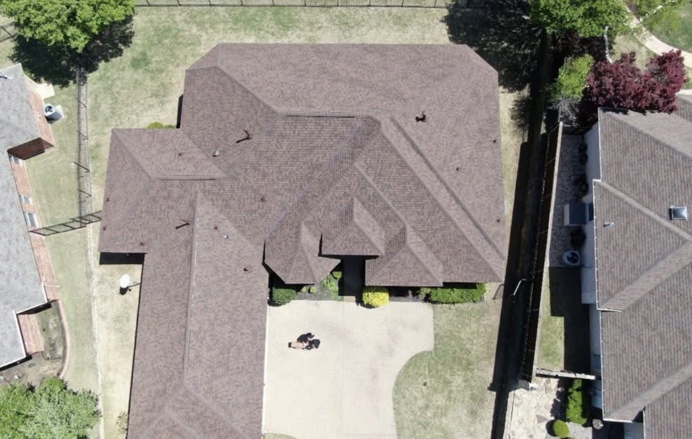

Slope-specific repair
Where impact is genuinely confined to one or two elevations.
Integrity that keeps you covered.
Storm Restoration
Hail damage rarely looks like a hole. It looks like a bruise, and it is easy to miss from the ground.

North Texas sits in one of the most hail-prone regions in the United States. A single spring storm can put an entire neighborhood's roofs on a different timeline, and the damage frequently does not announce itself with a leak.
What hail actually does to an asphalt shingle is knock granules loose and fracture the mat underneath. The shingle keeps sitting there looking mostly fine while UV starts working on the exposed asphalt. That is why documented inspection after a hail event matters more than waiting to see if the ceiling stains.
Round spots where granules were driven off, often soft to the touch. The classic hail signature on asphalt.
Hail damage is scattered and directional, not in the neat lines that wear or foot traffic produce.
Gutters, downspouts, roof vents, and AC fins dent visibly and are often the first confirmation.
A sudden heavy deposit after a storm means the roof surface took a beating.
Ridge and hip caps are more exposed and often show impact before field shingles do.
Causes
Damage potential rises sharply with hailstone size, and dense stones do more than their diameter suggests.
Hail rarely falls straight down here. Slopes facing the storm take disproportionate damage.
An older, more brittle shingle fractures where a newer one might absorb the same impact.
Several moderate storms over consecutive seasons can add up to a failed roof.
Our inspection
Hail swaths in the Metroplex are often only a few miles wide. Tarrant County can take a serious hit while Collin County stays dry, and within a single suburb the damage line can run down the middle of a street. Your neighbor's outcome is not evidence about your roof in either direction.
Process
Licensed inspector documents impact damage across every slope.
We show you the photographs and explain what we are seeing and why it matters.
A free estimate describing the roofing work in specific, itemized terms.
Performed once you approve the scope.
Full nail sweep and a walkthrough of completed work.
Gutters, vents, screens, and gable siding assessed as part of the same visit, since they took the same storm.
Options
Where impact is genuinely confined to one or two elevations.
Where impact density across the roof makes repair impractical.
Class 4 products are worth discussing if you have been hit repeatedly. We will explain the trade-offs plainly.
Organized, dated photographs and a written roofing scope you may share with your carrier if you choose.
The most exposed line on the roof, and often the only part showing fracture.
Dented gutters, downspouts, and vent housings handled alongside the roof rather than months later.
That is what the free inspection is for. A licensed inspector will tell you what your roof actually requires.
Free inspectionNo-obligation estimateFully insuredLicensed inspectors
In detail
An asphalt shingle is a fibreglass mat saturated in asphalt with a layer of ceramic granules bonded to the surface. The granules are not decoration — they are the shingle's UV shield, and the asphalt underneath them degrades quickly once exposed.
A hail impact does two things at once. It knocks granules loose in a roughly circular area, and it fractures the mat beneath. What you see afterwards is a dark spot, sometimes soft to the touch, often described as a bruise. The shingle is still lying flat and still shedding water. What it has lost is time.
Damage potential rises sharply with stone size, and dense stones do more than their diameter suggests. Older, more brittle shingles fracture where a newer one might absorb the same hit. And because hail here almost never falls straight down, the slopes facing the storm's approach take disproportionate damage — which is exactly why an inspection has to report per slope rather than giving the roof one grade.
Plenty of things on a roof look like damage and are not. Blistering from manufacturing or heat produces small round marks that can resemble impact. Foot traffic scuffs granules along a predictable path. Mechanical damage from a ladder or a satellite installation clusters in one spot. Ordinary ageing sheds granules fairly evenly across a whole slope.
Hail has a signature that is fairly hard to fake: the pattern is random rather than following the courses or a walking route, it is directional across the roof, and it is corroborated by soft metals. Dented gutters, dented downspouts, dented vent housings, torn window screens, and flattened AC condenser fins all took the same storm, and none of them dent from age.
We record all of it, and we are equally clear about what is ordinary wear. Reporting normal ageing as storm damage does a homeowner no favours at all.
Class 4 impact-rated products are worth a real conversation in a hail corridor, particularly if you have already been hit more than once. They are tested to tolerate impact better than standard shingles and they generally do.
They are also not indestructible, they cost more, and the marketing around them is enthusiastic. Some insurance carriers treat them differently in premium terms and some do not — that is a question for your carrier, and we will not make claims about your policy in order to help sell a product. What we will do is explain the trade-offs and let you decide whether the maths works for your house.
What to expect
Most of what makes a job go badly is not craftsmanship — it is being left to guess what happens next. Here is the sequence.
Free inspectionNo-obligation estimateFully insured
Sooner is better. Documentation close in time to the storm is more useful than documentation months later.
Gutters, downspouts, vents, screens, and AC fins. They confirm quickly whether the property took impact at all.
Impact density recorded per elevation, because hail is directional and one grade for the whole roof means nothing.
More exposed, sitting over a bend, and often showing fractures before the field does.
You see representative impacts photographed with location context, and hear what is hail and what is age.
Free and itemized. What you do with it — including nothing — is entirely your decision.
From our inspections
Without a consistent method for recording impact density, an assessment is just an impression.
Heat blistering and manufacturing defects get reported as impact by people who have not looked closely.
The elevation facing the street is not necessarily the one that faced the storm.
Gable siding, garage doors, and fence caps take the same hail and rarely make it into the report.
Why Timber
Questions
Frequently you cannot tell from the ground, which is the entire problem. Dented gutters and vents are a strong hint. A free inspection settles it.
Not necessarily, and not right away. Impact damage often shortens the roof's remaining life rather than opening it immediately. That delay is why so much hail damage goes unaddressed until it is too late to do much about it.
No, and be cautious of anyone who says they can. We document visible damage and describe the roofing scope. Your carrier makes the decision.
Policies and timelines vary, so check yours. From a purely roofing standpoint, sooner is better — exposed mat keeps degrading.
Free inspection · Free estimate
Schedule a free inspection with Timber Roofing & Exteriors and get a clear assessment of your roof, gutters, or exterior — documented with photographs you keep either way.
Free inspectionNo-obligation estimateLicensed inspectorsFully insured